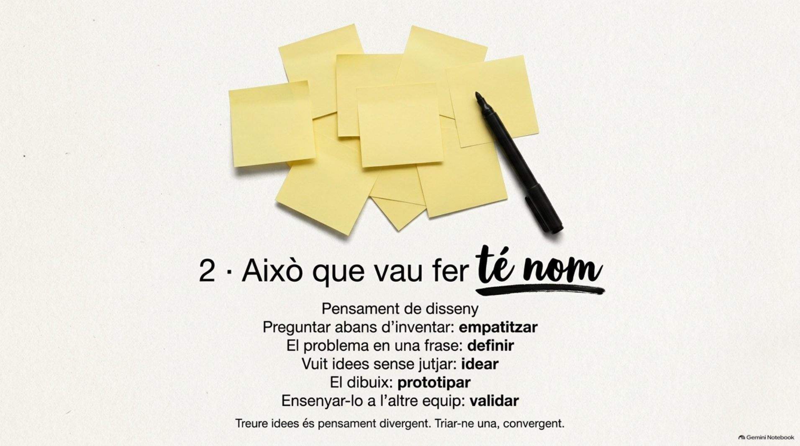
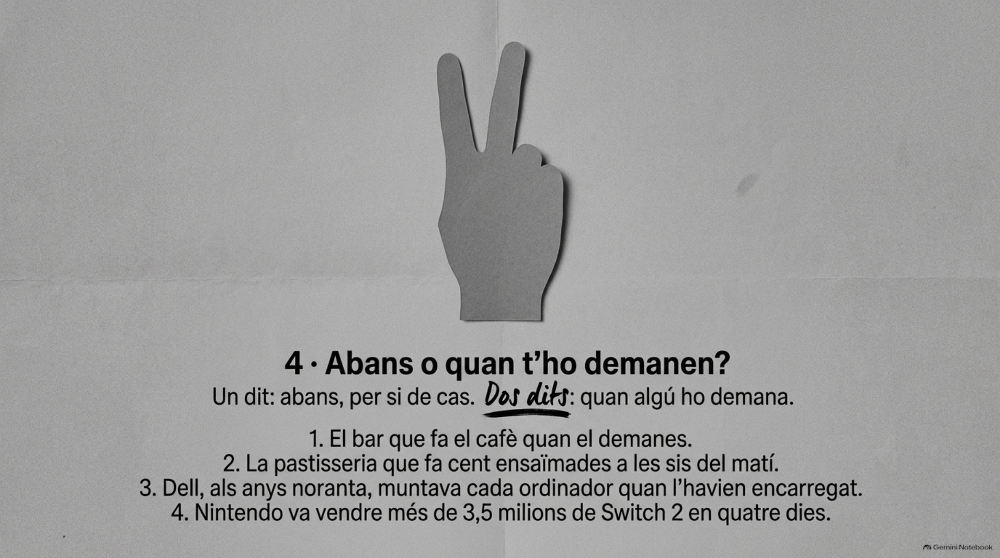
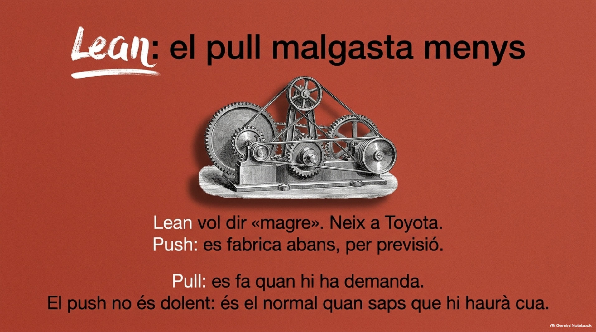

Ensenyar el dibuix a l'altre equip, quina etapa és?
Validar: escoltar l'usuari i ajustar. El dibuix era el prototip. Ara, desenganxeu els paperets (S).

Cas 1 de 4: abans o quan t'ho demanen?

Quina de les dues maneres malgasta menys?
El pull. Per això el tria Lean. El push no és dolent: és el normal quan saps que hi haurà cua.